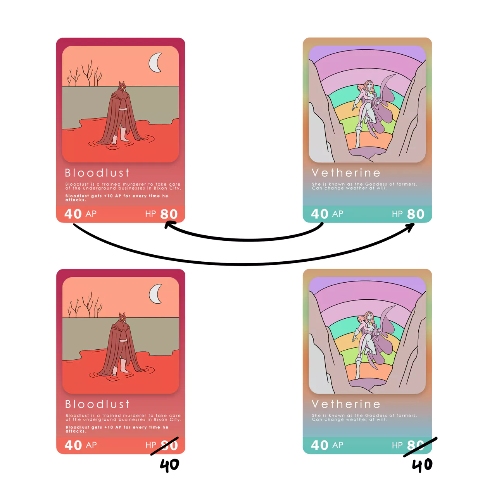

Breaking a Shield
Depending on whoever attacks first, AP of the Attack
Card(on
the Attack Line), should be higher than the HP of the
Defence
Card on the Defence Line of the opponent.
You might need
more than 1 round to deplete the HP of a defender. Once
you
kill a defender, you get to break 1 shield of the opponent.
▪ Per round only 1 shield can be broken.
▪ But don’t forget, breaking a shield will give your opponent
an
extra card in their hand to play in the same round.
If an Attack Card has 40 AP and 80 HP, and the Defence
card that is being attacked has 40 AP and 80 HP, then this
is how the calculation goes:

Defenders also might
have some AP to deplete
the Attacker’s HP.
▪ AP value does not
change, unless a card
description says so.
▪ Here bloodlust gets +10
AP for the next round,
based on the card
description.
Only when the HP of a Defence Card is 0 can you
break a shield. So you might need another round to kill the
Defence Card and break a desired shield.
A Defence Card might also have some AP to decrease the
Attack Card’s HP when it attacks.
Only 2 Attack Cards are allowed to attack per round
(Exception Cards : a broken shield, Antigrav)
Likewise your opponent tries to attack your Defence Line to
get to your shield after your attack ends.
Used Spells and dead Heroes go into the graveyard.
It’s your call on which hero you want to place in your Defence
Line and which hero do you want to place in your
Attack Line.
There are only 5 slots in the Attack Line and Defence
Line,
just like the shields. So you can place only that many
cards,
including Spell Cards.